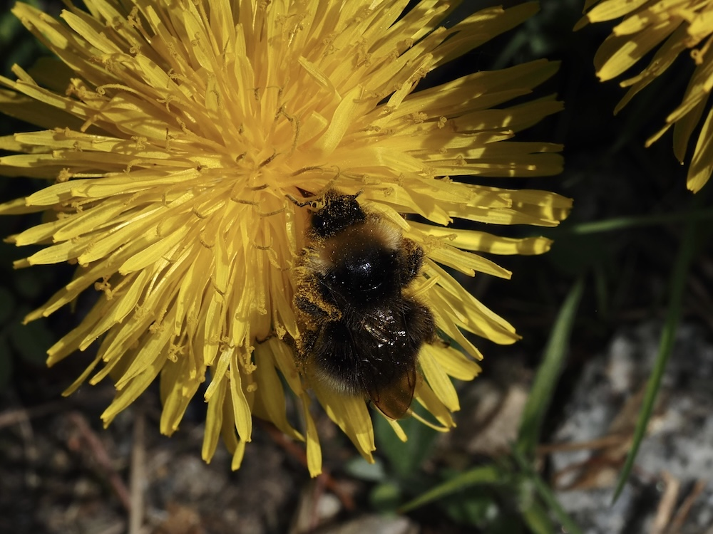

Der unkaputtbare Alleskönner – und botanisch eine der komplexesten Arten Europas.



Der Fallschirm-Mechanismus
Jede Löwenzahn-Frucht hängt an einem Fallschirm (Pappus) aus federleichten Haaren. Diese Konstruktion ist so aerodynamisch, dass Forscher sie als Vorbild für Mini-Drohnen studieren. Bei Windstille trennt sich der Pappus vom Stiel und segelt autonom. Bis zu 100 km kann ein Samen so zurücklegen – ein natürliches Wunder der Flugtechnik.
800 Arten in einer – Apomixis
Das ‚agg.' (Aggregat) hinter dem Namen ist kein Zufall: Es gibt über 800 Löwenzahn-Kleinarten, die sich alle per Apomixis fortpflanzen – Samen entstehen ohne Befruchtung als Klone. Jede Klonlinie ist eine eigene ‚Art'. Für Bestimmer ein Albtraum, für die Evolution ein faszinierendes Experiment.
Wissenswertes & Merksätze
Milchsaft gegen Frassfeinde
Der weisse Milchsaft enthält Bitterstoffe und klebt – er schützt vor Insekten und Schnecken. Im Mittelalter auch als Warzenbehandlung genutzt.
Pollenkalender
Der Löwenzahn ist eine der wichtigsten Frühjahrsnektarquellen für Bienen – eine einzige Pflanze produziert täglich Millionen Pollenkörner.
Falsche Sonne
Die Körbchenblüte besteht aus hunderten Einzelblüten – jedes ‚Blütenblatt' ist eine vollständige Zungenblüte mit Staubgefässen und Stempel.